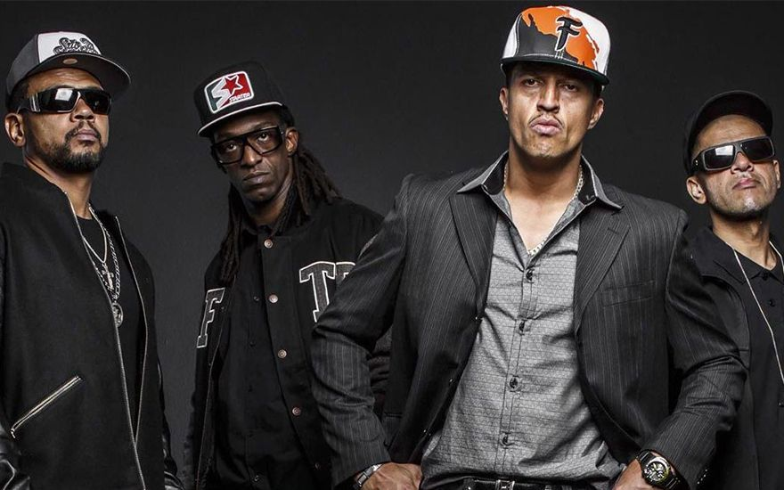
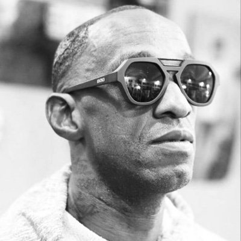
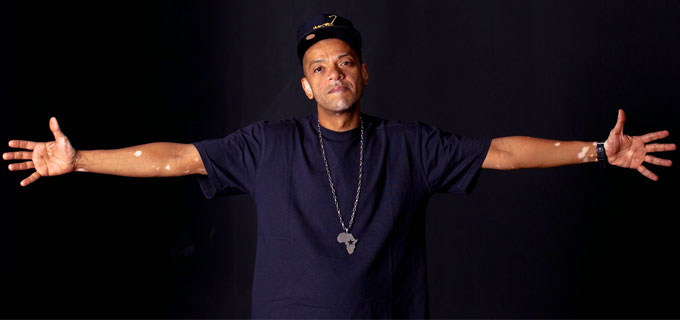

RACIONAIS MC'S

História
Nascido no final da década de 1980, o nome do grupo foi inspirado no disco Tim Maia Racional de Tim Maia. A
primeira gravação do grupo foi feita em 1988, quando o selo Zimbabwe Records lançou a coletânea Consciência
Black, Vol. I. Neste LP, apareceram os dois primeiros sucessos do grupo: "Pânico na Zona Sul" e "Tempos
Difíceis". Ambas canções apareceriam dois anos depois em Holocausto Urbano, primeiro disco oficial do grupo e
cujas letras denunciam o racismo e a miséria na periferia de São Paulo, marcada pela violência e pelo crime.
Realizações
- Em 1991, os Racionais MC's abriram o show do pioneiro Public Enemy, um dos mais famosos grupos de hip hop
americano, no Ginásio do Ibirapuera, em São Paulo. No final de 1992
- No ano seguinte, o grupo participou do projeto "Música Negra em Ação", realizado no Teatro das Nações em São
Paulo, e gravou o disco Raio X Brasil, terceiro disco do conjunto, lançado em uma festa na quadra da escola
de samba Rosas de Ouro para um público estimado de 10 mil pessoas.
- Principal atração do Rap no Vale, um concerto de rap realizado no final de 1994, no Vale do Anhangabaú
- No final de 1997, foi lançado o disco Sobrevivendo no Inferno, pelo selo Cosa Nostra (do próprio grupo), que
vendeu cerca de 500 mil cópias. Dentre os grandes sucessos deste álbum estão "Diário de um Detento",
"Fórmula Mágica da Paz", "Capítulo 4, Versículo 3 e "Mágico de Oz".
Integrantes
- Mano Brown - Pedro Paulo Soares Pereira nasceu em São Paulo no dia 22 de abril de 1970, mais conhecido como
Mano Brown, é um rapper brasileiro, produtor e vocalista dos Racionais MC's.
- Ice Blue - Paulo Eduardo Salvador, mais conhecido como Ice Blue, nasceu no dia 16 de março de 1971,
apresenta o programa "Balanço Rap" na estação de rádio 105 FM junto com o companheiro de grupo KL Jay.

- Edi Rock - Edivaldo Pereira Alves nasceu em São Paulo no dia 20 de setembro de 1970, mais conhecido pelo seu
nome artístico, Edi Rock é um rapper e compositor brasileiro.

- KL Jay - Kleber Geraldo Lelis Simões, mais conhecido por seu nome artístico KL Jay, nasceu em São Paulo no
dia 10 de agosto de 1969 em São Paulo. KL Jay é o DJ dos Racionais MC's. Cabe a ele a criação das bases, que
são aquelas batidas que acompanham o lírico, dando o ritmo certo para esses serem cantados.

Redes sociais do grupo
Site do grupo
Site Oficial do racionais